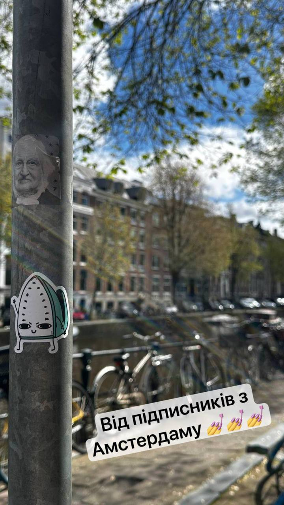
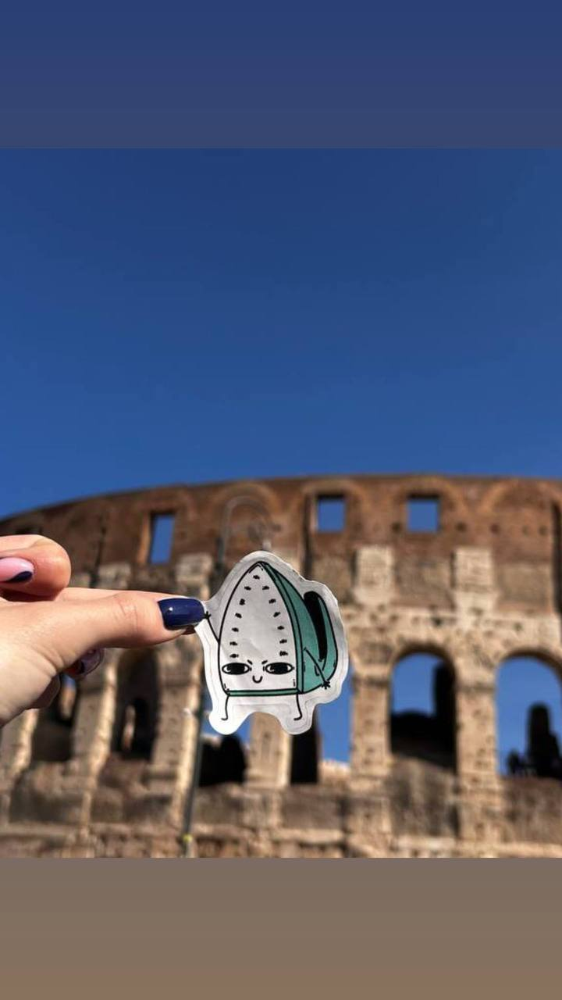
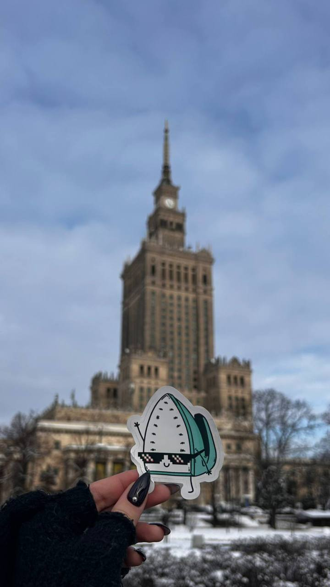
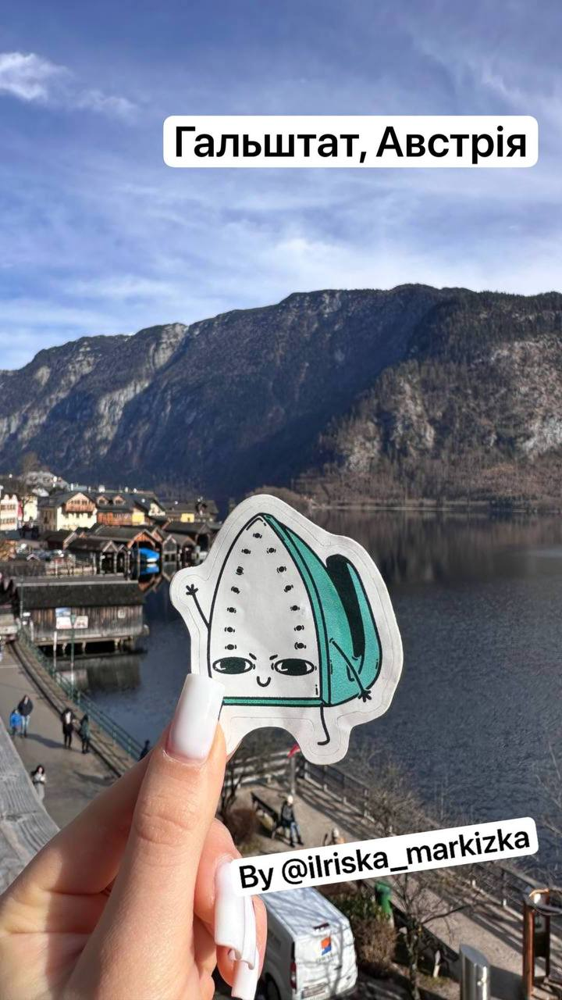
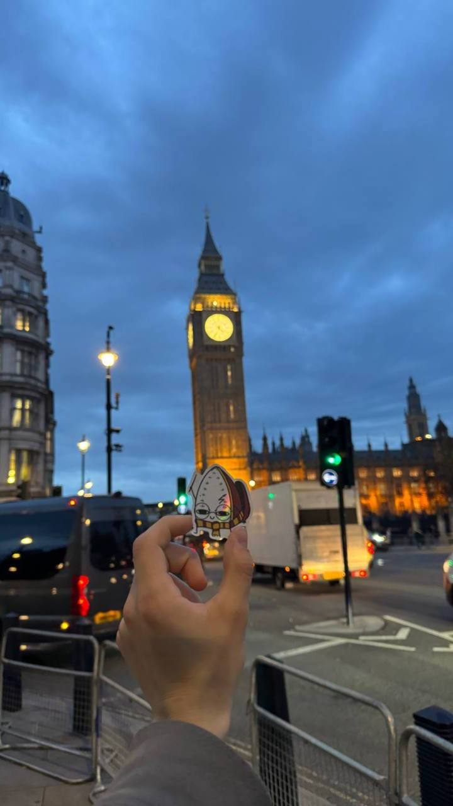
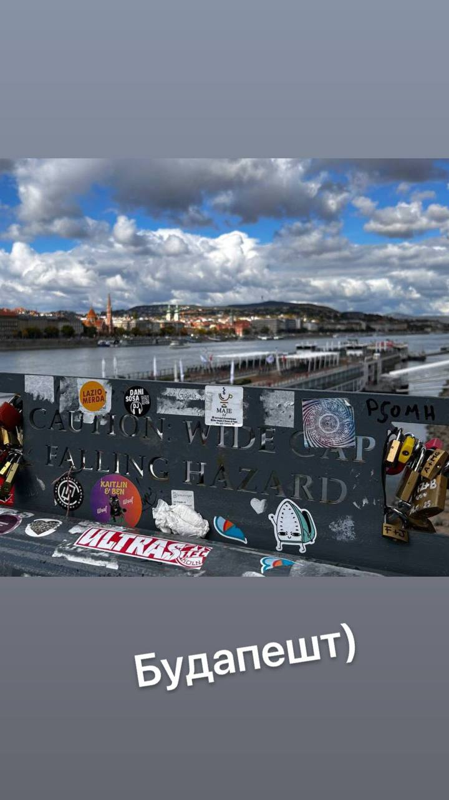
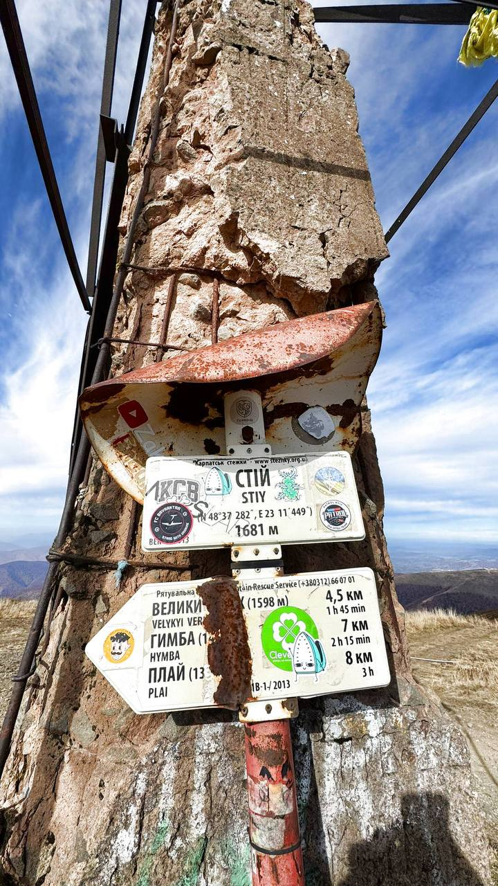
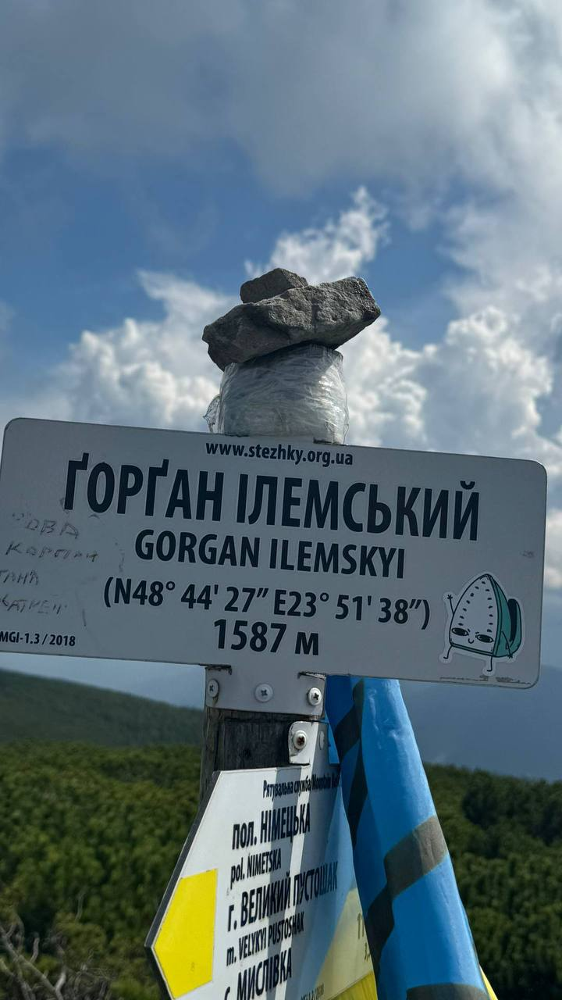

Home | Iron Around the World | Events | Memes | Telegram
Jump to a city:
Amsterdam • Rome • Warsaw • Hallstatt • London • Budapest • Mountain • Gorgany
Our Iron doesn't just stay home. It travels. From European capitals to Ukrainian mountain peaks — photographic proof that the Iron has been to more countries than most people.


Amsterdam — canals, bikes, and one iron. The Dutch capital welcomed our mascot with open arms. Two visits, two angles, one iconic appliance.

When in Rome, press as the Romans do. The Eternal City met the Eternal Iron at the Colosseum. SPQR — Steam Presses Quite Reliably.

Warsaw — Poland's vibrant capital got a visit. The Iron explored the city with its usual quiet confidence.

Hallstatt — one of the most photographed villages in the world. Nestled between mountains and a crystal lake in Austria. The Iron fit right in.

London — mind the gap, the Iron is crossing. Iconic meeting iconic. Big Ben, red buses, and one very well-pressed mascot.

Budapest — the Pearl of the Danube. The Iron admired the views and reportedly enjoyed the thermal baths. (Steaming is its natural state anyway.)

The Iron conquered the summit near Striy, Ukraine. Altitude: high. Temperature: optimal. Wrinkles: none.

The Gorgany mountain range in the Ukrainian Carpathians. Wild, remote, and absolutely beautiful. The Iron made it to the Ilemsky peak — officially conquered.
← Back to Mascot | Our Events →
91YTYG Meme Community © 2023-2026